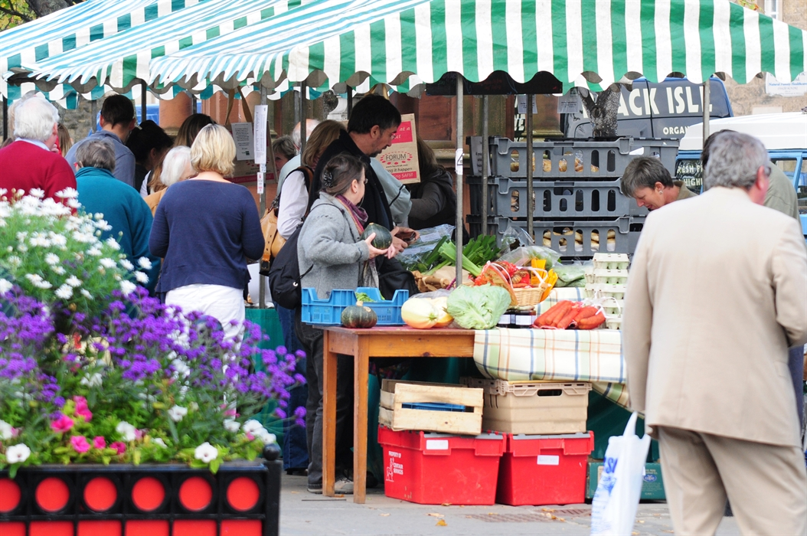

Haddington was first granted Burgh status during the first half of the twelfth century during the reign of King David I, and grew to be the fourth largest town in Scotland!
Haddington was primaraly a market town, and still holds market in the centre each month.

Destroyed Many Times Over
Haddington has had a rough history, being in the way for many invading English armys. This as well as flooding and accidental fires has meant the town has been destroyed or severly damaged many times. Despite this, each time it has recovered!
Here's a nonexaustive list of disasters that have befallen Haddington:
- 1216 - Burnt down by the English under King John
- 1244 - Burnt down by arsonists, along with many other major towns in Scotland
- 1297 - Burnt down by a retreating Scottish army
- 1356 - Sacked by the English under King Edward III
- 1358 - A flood washes away a large portion of the town
- 1421 - A flood causes considerable damage to the town
- 1548-1549 - Haddington is occupied by the English, and sieged by the Scots and French. A major plague sweeps through as a result. The damage done to St. Mary's church wasn't fully repaired until 1973.
- 1598 - Burnt down by accident by a maidservent drying clothes too close to a fire overnight
- 1775 - The river Tyne floods 17 feet above its ordinary level, causing major damage
- 1831 - Haddington becomes the first Cholera outbreak in Scotland
- 1941 - While attempting to hit a convey moving up the A1, the Germans bomb Haddington
- 1948 - A massive flood puts most of the town underwater